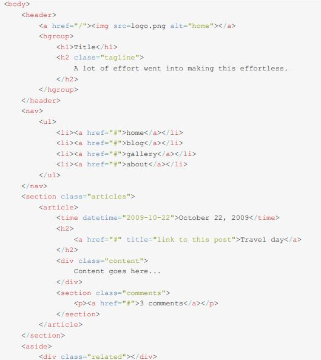

ETIQUETAS HTML5
hgroup> este sirve para agrupar títulos debajo del elemento
El atributo permite a los desarrolladores especificar un atajo de teclado que permite activar un elemento a asignarle el foco. Este atributo ya existía en HTML 4, aunque ha sido utilizado en m uy pocas ocasiones. Como HTML5 está pensado para aplicaciones, y algunos usuarios siguen prefiriendo los atajos de teclado, este atributo no ha sido eliminado, y ahora está disponible para cualquier elemento. GARRO, A. (2014). Html5. licencia Creative Commons Recuperado el, 20.< mark> fue agregada para resaltar parte de un texto importante
Micoche<7mark> es rojo en esta línea resalta la palabra coche y los resultados se mostraran con el código del listado 1-19
presenta la llamada letra pequeña como en impresiones legales, descargos etc
Define un comentario
Define el tipo de documento
